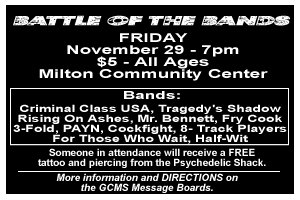

 FRI NOV 29from the archive Criminal Class USA, Tragedy's Shadow, Rising On Ashes, Mr. Bennett, Fry Cook, 3-Fold, PAYN, Cockfight, 8-Track Players, For Those Who Wait, HalfWit criminal class usatragedy's shadowrising on ashesmr. bennettfry cook3-foldpayncockfight8-track playersfor those who waithalfwit Milton Community Center, Milton FL open in mapsshare this flyerthe archive ↗